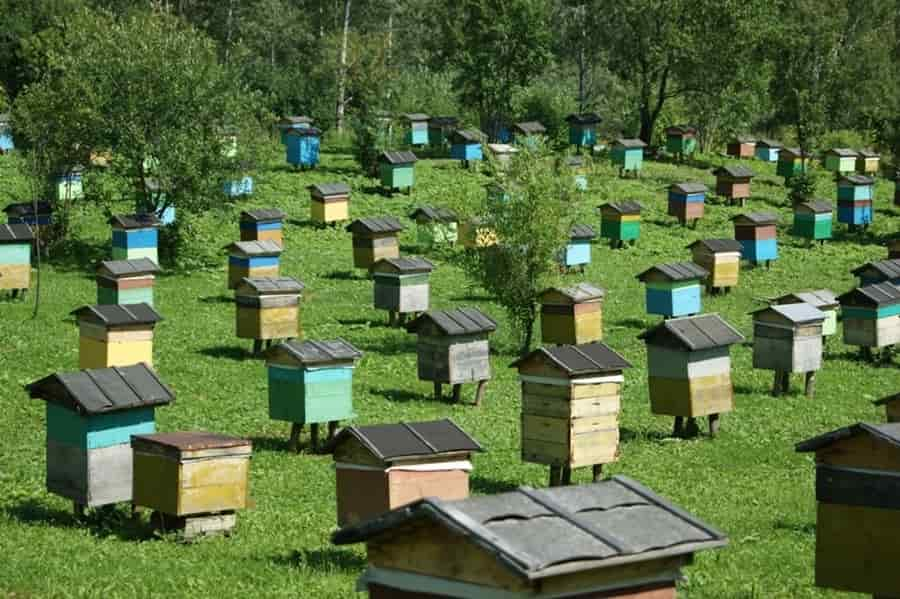
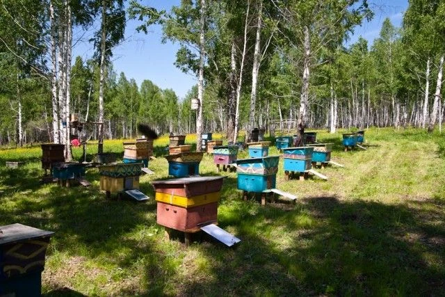

Размещение ульев
Размещение пасеки – один из важнейших аспектов успешного пчеловодства, определяющий не только эффективность сбора мёда, но и здоровье и производительность пчелиной популяции. Выбор подходящего места для пасеки требует внимательного анализа различных факторов, начиная от климатических условий и экологической обстановки до доступности ресурсов, таких как вода и цветущие растения. В этом контексте важно учитывать потребности и требования пчёл, а также обеспечить им оптимальные условия для работы и развития.
Солнечное освещение:
Пчёлы активно работают в условиях яркого солнечного света. Солнечное освещение стимулирует их активность и повышает производство мёда. Пасека должна быть расположена так, чтобы ульи получали максимальное солнечное освещение в течение дня. Идеально, если пасека будет ориентирована на восток или юг, чтобы пчёлы могли начать свою работу с самого утра.

Защита от ветра:
Сильные ветры могут повреждать ульи и затруднять работу пчёл. Пасеку следует размещать в месте, защищенном от сильных ветров, например, за деревьями, кустами или искусственными преградами. Это поможет сохранить ульи в хорошем состоянии и обеспечить комфортные условия для работы пчёл.
Доступ к воде:
Пчёлы нуждаются в доступе к воде для охлаждения улья и растворения мёда во время зимовки. Идеально, если рядом с пасекой есть источник воды, например, река, озеро или пруд. Если подобного источника нет, можно установить специальные поилки для пчёл, наполняемые водой, чтобы обеспечить им доступ к необходимым жидкостям.
Отсутствие химических загрязнений:
Пасека должна быть расположена вдалеке от источников загрязнения, таких как промышленные предприятия, автомобильные дороги и химические заводы. Химические загрязнения могут оказывать негативное воздействие на здоровье пчёл, загрязнять мёд и приводить к гибели пчелиных семей.
Расстояние между ульями:

Ульи следует размещать на определенном расстоянии друг от друга, чтобы избежать конфликтов между пчёлами и предотвратить распространение болезней и паразитов. Рекомендуемое расстояние между ульями составляет от 1 до 2 метров. Это обеспечит каждой пчелиной семье достаточное пространство для свободного движения и развития.
Подъезд для пчёл:
Важно обеспечить пчёлам удобный подъезд к ульям. Пчёлы должны легко вылетать и возвращаться в улей, не испытывая препятствий на своем пути. Рядом с ульями не должно быть высоких растений, строений или других препятствий, которые могли бы мешать пчёлам при взлете и посадке.
Экологический баланс:
Пасека должна находиться в экологически благоприятном районе с богатой растительностью и разнообразием цветов. Разнообразие цветов обеспечит пчёлам доступ к различным источникам нектара и пыльцы в течение всего сезона. Это важно для выращивания сильных и здоровых пчелиных семей и производства высококачественного мёда.
Близость к сельскохозяйственным угодьям:
Желательно, чтобы пасека была расположена недалеко от сельскохозяйственных угодий, таких как поля, сады и огороды. Это обеспечит пчёлам доступ к обильным источникам нектара и пыльцы, что положительно скажется на их продуктивности и здоровье.
Учитывая эти факторы, пчеловод может выбрать оптимальное место для размещения своей пасеки, обеспечивая благоприятные условия для развития и процветания пчелиной популяции.